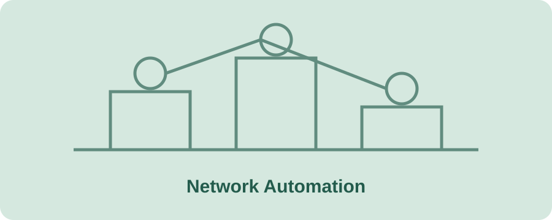
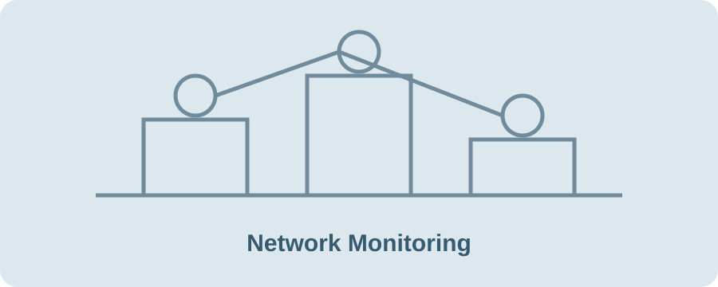
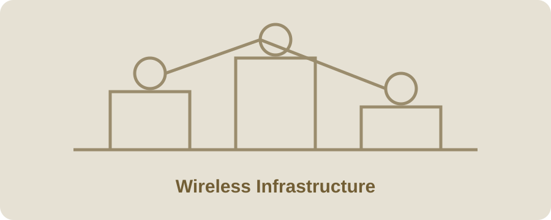

PROJECT 01 · AUTOMATION
Multi-site network automation
Used Ansible to streamline repeatable network administration across a distributed wireless environment.
Work focused on improving consistency, visibility, and maintainability across network operations.

Used Ansible to streamline repeatable network administration across a distributed wireless environment.

Applied monitoring and diagnostic tools to improve visibility into device availability and help investigate network incidents.

Supported wireless access infrastructure and customer connectivity through troubleshooting and ongoing operational maintenance.